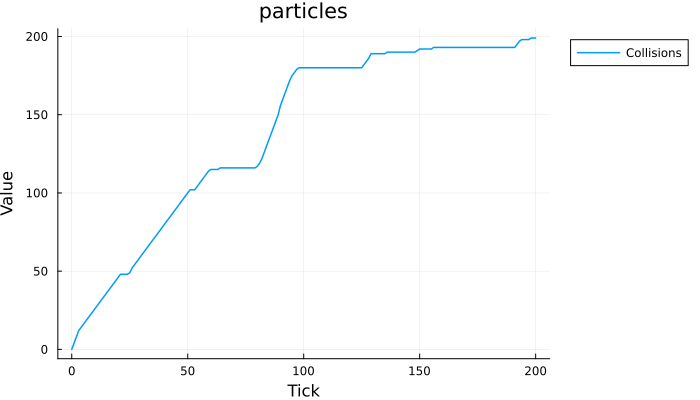
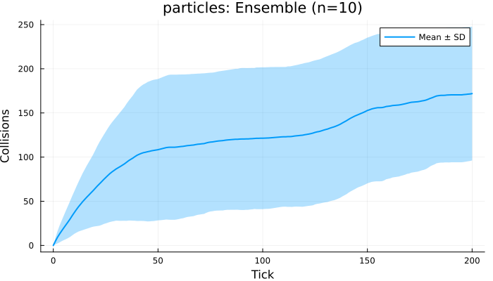
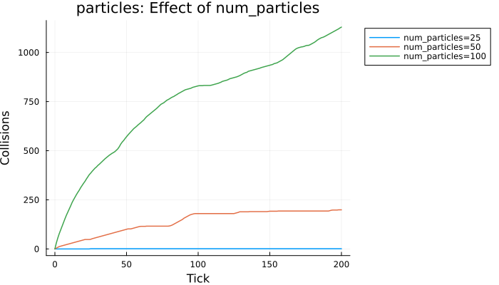

Particles
Overview
WHAT IS IT?
This model is one in a series of GasLab models. They use the same basic rules for simulating the behavior of gases. Each model integrates different features in order to highlight different aspects of gas behavior. This model is different from the other GasLab models in that the collision calculations take the circular shape and size of the particles into account, instead of modeling the particles as dimensionless points.
HOW IT WORKS
The model determines the resulting motion of particles that collide, with no loss in their total momentum or total kinetic energy (an elastic collision).
To calculate the outcome of collision, it is necessary to calculate the exact time at which the edge of one particle (represented as a circle), would touch the edge of another particle (or the walls of a container) if the particles were allowed to continue with their current headings and speeds.
By performing such a calculation, one can determine when the next collision anywhere in the system would occur in time. From this determination, the model then advances the motion of all the particles using their current headings and speeds that far in time until this next collision point is reached. Exchange of kinetic energy and momentum between the two particles, according to conservation of kinetic energy and conservation of momentum along the collision axis (a line drawn between the centers of the two particles), is then calculated, and the particles are given new headings and speeds based on this outcome.
THINGS TO NOTICE
Run the model with different masses, by setting the MAX-PARTICLE-SIZE larger than the MIN-PARTICLE-SIZE. Mass is scaled linearly to the area of the particle, so that a particle that is twice the radius of another particle, has four the area and therefore four times the mass.
With many different mass particles colliding over time, different sized particles start to move at different speed ranges (in general). The smallest mass particles will be usually moving faster (red) than the average particle speed and the largest mass particles will be usually slower (blue) than the average particle speed. This emergent result is what happens in a gas that is a mixture of particles of different masses. At any given temperature, the higher mass particles are moving slower (such as Nitrogen gas: N<sub>2</sub>) then the lower mass particles (such as water vapor: H<sub>2</sub>O).
The particle histograms quickly converge on the classic Maxwell-Boltzmann distribution. What’s special about these curves? Why is the shape of the energy curve not the same as the speed curve?
Look at the other GasLab models to compare the particle histograms. In those models, the particles are modeled as “point” particles, with an area of “zero”. The results of those models should match this model, even with that simplification.
With particles of different sizes, you may notice some fast moving particles have lower energy than medium speed particles. How can the difference in the mass of the particles account for this?
THINGS TO TRY
Setting all the particles to have a very slow speed (e.g. 0.001) and one particle to have a very fast speed helps show how kinetic energy is eventually transferred to all the particles through a series of collisions and would serve as a good model for energy exchange through conduction between hot and cold gases.
To see what the approximate mass of each particle is, type this in the command center:
ask particles [ set label precision mass 0 ]EXTENDING THE MODEL
Collisions between boxes and circles could also be explored. Variations in size between particles could investigated or variations in the mass of some of the particle could be made to explore other factors that affect the outcome of collisions.
NETLOGO FEATURES
Instead of advancing one tick at a time as in most models, the tick counter takes on fractional values, using the tick-advance primitive. (In the Interface tab, it is displayed as an integer, but if you make a monitor for ticks you’ll see the exact value.)
RELATED MODELS
Look at the other GasLab models to see collisions of “point” particles, that is, the particles are assumed to have an area or volume of zero.
CREDITS AND REFERENCES
This model was developed as part of the GasLab curriculum (http://ccl.northwestern.edu/curriculum/gaslab/) and has also been incorporated into the Connected Chemistry curriculum (http://ccl.northwestern.edu/curriculum/ConnectedChemistry/)
HOW TO CITE
If you mention this model or the NetLogo software in a publication, we ask that you include the citations below.
For the model itself:
- Wilensky, U. (2005). NetLogo GasLab Circular Particles model. http://ccl.northwestern.edu/netlogo/models/GasLabCircularParticles. Center for Connected Learning and Computer-Based Modeling, Northwestern University, Evanston, IL.
Please cite the NetLogo software as:
- Wilensky, U. (1999). NetLogo. http://ccl.northwestern.edu/netlogo/. Center for Connected Learning and Computer-Based Modeling, Northwestern University, Evanston, IL.
COPYRIGHT AND LICENSE
Copyright 2005 Uri Wilensky.

This model is licensed under the Creative Commons Attribution-NonCommercial-ShareAlike 3.0 License. To view a copy of this license, visit https://creativecommons.org/licenses/by-nc-sa/3.0/ or send a letter to Creative Commons, 559 Nathan Abbott Way, Stanford, California 94305, USA.
NetLogo itself is free software for non-commercial use under the terms of the GNU General Public License (see full license information here).
To inquire about commercial licenses for either NetLogo or specific models from the models library, please contact netlogo-commercial-admin@ccl.northwestern.edu.
This model and associated activities and materials were created as part of the project: MODELING ACROSS THE CURRICULUM. The project gratefully acknowledges the support of the National Science Foundation, the National Institute of Health, and the Department of Education (IERI program) – grant number REC #0115699.
Parameters
| Parameter | Type | Default | Description |
|---|---|---|---|
num_particles | Int | 50 | num particles |
speed | Float64 | 0.02 | speed |
collision_radius | Float64 | 1.0 | collision radius |
collision_speed | Float64 | 0.1 | collision speed |
grid_width | Int | 33 | grid width |
grid_height | Int | 33 | grid height |
max_ticks | Int | 200 | max ticks |
Source Code
The Julia code to run this model:
using ArkModelZoo
_, trajectory = run_particles()Time Series

Ensemble Runs
Ten replicates with different random seeds, showing mean ± standard deviation.

Parameter Sensitivity
Varying num_particles.

Appendix: Source Code
This model is implemented in the Ark.jl Entity-Component-System (ECS) framework. The code is split into five files, each with a distinct role:
- Parameters: a mutable struct holding all configurable values.
- Components: lightweight data types attached to individual entities (agents).
- Resources: world-level shared state accessible to all systems.
- Systems: functions that operate on entities each tick, defining model behavior.
- Model: wiring that assembles the world, registers resources and systems, and provides the run entry point.
Parameters (parameters.jl)
The parameter struct uses @kwdef so that every field has a default value and can be overridden by keyword. These defaults match the original NetLogo model’s slider settings.
Base.@kwdef mutable struct ParticlesParams
num_particles::Int = 50
speed::Float64 = 0.02
collision_radius::Float64 = 1.0
collision_speed::Float64 = 0.1
grid_width::Int = 33
grid_height::Int = 33
max_ticks::Int = 200
seed::Int = 42
endComponents (components.jl)
Components are lightweight data types attached to individual entities (agents). Mutable structs hold per-entity state, while empty tag structs act as markers for the ECS query system to efficiently filter entities.
mutable struct ParticlePosition
x::Float64
y::Float64
end
mutable struct ParticleHeading
angle::Float64
endResources (resources.jl)
Resources are world-level singletons shared across all systems, used for global state and aggregate statistics.
mutable struct ParticleStats
collisions::Int
end
ParticleStats() = ParticleStats(0)Systems (systems.jl)
Systems contain the model logic and execute in a defined order each tick. Each system struct implements either initialize! (run once at setup) or update! (run every tick).
# ── Helper: NetLogo heading math and toroidal distance ──
function _particles_heading_to_rad(h::Float64)
return h * π / 180.0
end
function _particles_torus_dist(x1::Float64, y1::Float64, x2::Float64, y2::Float64, w::Float64, h::Float64)
dx = abs(x1 - x2)
dy = abs(y1 - y2)
dx = min(dx, w - dx)
dy = min(dy, h - dy)
return sqrt(dx * dx + dy * dy)
end
# ── Initialization ──
struct InitParticlesSystem <: System end
function initialize!(::InitParticlesSystem, world::World)
params = get_resource(world, ParticlesParams)
rng = get_resource(world, RNGResource).rng
w = Float64(params.grid_width)
h = Float64(params.grid_height)
half_w = w / 2.0
half_h = h / 2.0
for _ in 1:params.num_particles
# random-xcor/ycor: float in [-half_w, half_w)
x = rand(rng) * w - half_w
y = rand(rng) * h - half_h
# heading random 360: integer [0, 359]
heading = Float64(rand(rng, 0:359))
new_entity!(world, (
ParticlePosition(x, y),
ParticleHeading(heading),
))
end
return nothing
end
# ── Particle Movement + Collision System ──
# NetLogo: ask turtles [ fd speed; if count in-radius 1 > 1 [
# ask turtles in-radius 1 [ set heading random 360; fd 0.1 ]
# set collisions collisions + 1 ] ]
# Sequential (shuffled) processing; mutations visible to later iterations.
struct ParticleSystem <: System
order::Vector{Int}
nearby::Vector{Int}
end
ParticleSystem() = ParticleSystem(Int[], Int[])
function update!(system::ParticleSystem, world::World)
params = get_resource(world, ParticlesParams)
stats = get_resource(world, ParticleStats)
rng = get_resource(world, RNGResource).rng
w = Float64(params.grid_width)
h = Float64(params.grid_height)
half_w = w / 2.0
half_h = h / 2.0
speed = params.speed
coll_radius = params.collision_radius
coll_speed = params.collision_speed
# Collect entities into flat arrays
n = 0
for (eids, _, _) in Query(world, (ParticlePosition, ParticleHeading))
n += length(eids)
end
n == 0 && return nothing
pos_x = Vector{Float64}(undef, n)
pos_y = Vector{Float64}(undef, n)
headings = Vector{Float64}(undef, n)
idx = 0
for (_, positions, heads) in Query(world, (ParticlePosition, ParticleHeading))
@inbounds for i in eachindex(positions)
idx += 1
pos_x[idx] = positions[i].x
pos_y[idx] = positions[i].y
headings[idx] = heads[i].angle
end
end
# Shuffle order (NetLogo ask turtles shuffles)
resize!(system.order, n)
for i in 1:n
system.order[i] = i
end
for i in n:-1:2
j = rand(rng, 1:i)
system.order[i], system.order[j] = system.order[j], system.order[i]
end
for ord_idx in 1:n
ti = system.order[ord_idx]
# forward speed
θ = _particles_heading_to_rad(headings[ti])
pos_x[ti] += sin(θ) * speed
pos_y[ti] += cos(θ) * speed
pos_x[ti] = mod(pos_x[ti] + half_w, w) - half_w
pos_y[ti] = mod(pos_y[ti] + half_h, h) - half_h
# count turtles in-radius 1 (includes self)
empty!(system.nearby)
for j in 1:n
d = _particles_torus_dist(pos_x[ti], pos_y[ti], pos_x[j], pos_y[j], w, h)
if d <= coll_radius
push!(system.nearby, j)
end
end
# if count > 1, at least one other turtle nearby
if length(system.nearby) > 1
# Inner ask shuffles too
for i in length(system.nearby):-1:2
j = rand(rng, 1:i)
system.nearby[i], system.nearby[j] = system.nearby[j], system.nearby[i]
end
for nj in system.nearby
headings[nj] = Float64(rand(rng, 0:359))
θ2 = _particles_heading_to_rad(headings[nj])
pos_x[nj] += sin(θ2) * coll_speed
pos_y[nj] += cos(θ2) * coll_speed
pos_x[nj] = mod(pos_x[nj] + half_w, w) - half_w
pos_y[nj] = mod(pos_y[nj] + half_h, h) - half_h
end
stats.collisions += 1
end
end
# Write positions and headings back to world
idx = 0
for (_, positions, heads) in Query(world, (ParticlePosition, ParticleHeading))
@inbounds for i in eachindex(positions)
idx += 1
positions[i].x = pos_x[idx]
positions[i].y = pos_y[idx]
heads[i].angle = headings[idx]
end
end
return nothing
end
# ── Termination System ──
struct ParticlesTerminationSystem <: System end
function update!(::ParticlesTerminationSystem, world::World)
params = get_resource(world, ParticlesParams)
tick = get_resource(world, Tick)
if tick.tick + 1 >= params.max_ticks
get_resource(world, Terminate).stop = true
end
return nothing
endModel (model.jl)
The model file assembles all pieces: it creates the ECS World with the required component types, registers resources, builds the Scheduler with systems in execution order, and exposes the public run entry point. The observer pattern records the trajectory each tick.
function particles_world(; initial_capacity::Int = 2048)
return World(
ParticlePosition,
ParticleHeading;
initial_capacity = initial_capacity,
allow_mutable = true,
)
end
function particles_systems()
return (
InitParticlesSystem(),
ParticleSystem(),
ParticlesTerminationSystem(),
)
end
function particles_model(params::ParticlesParams = ParticlesParams())
world = particles_world()
_add_standard_resources!(world, params)
add_resource!(world, ParticleStats())
scheduler = Scheduler(world, particles_systems())
initialize!(scheduler)
return scheduler
end
struct ParticlesObserver end
function particles_headers(::ParticlesObserver)
return ["Collisions"]
end
function particles_values(::ParticlesObserver, world::World)
stats = get_resource(world, ParticleStats)
return Float64[stats.collisions]
end
function run_particles(; params::ParticlesParams = ParticlesParams(), observe::Bool = true)
return _run_model(particles_model, ParticlesObserver(), particles_values; params, observe)
end